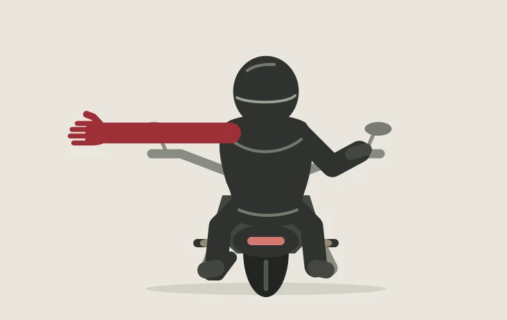
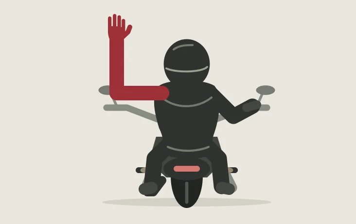
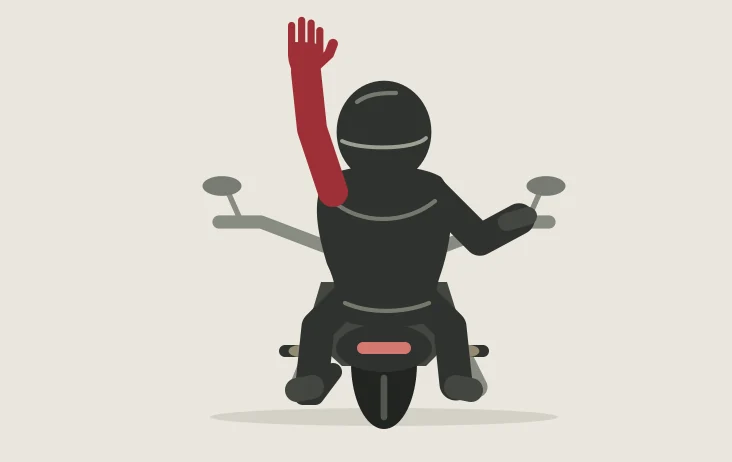
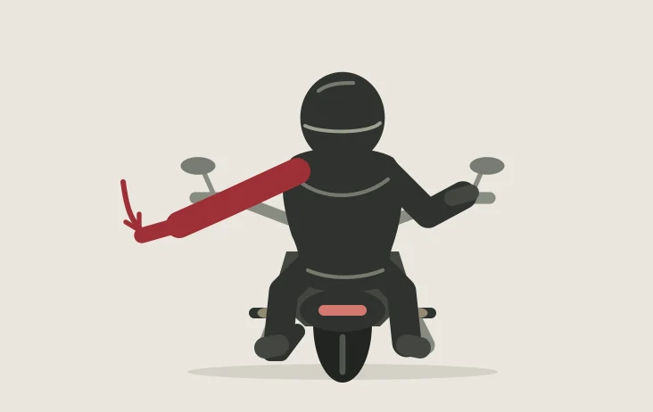
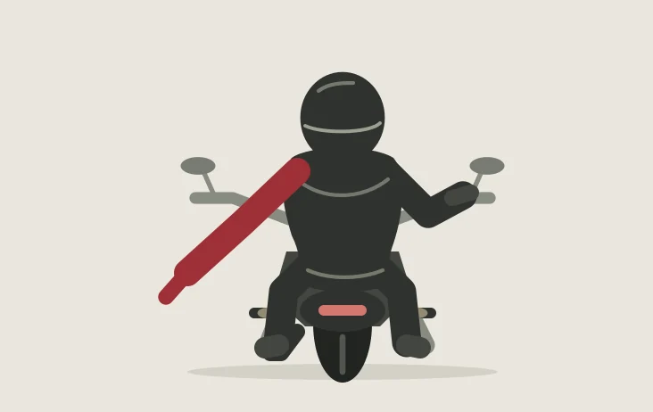
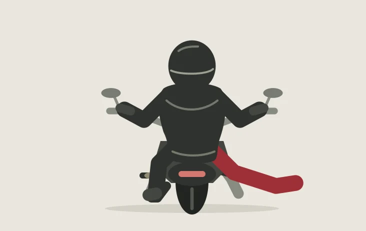

Журнал клуба
Знаки мотоциклистов
Человек сзади видит вашу руку и должен понять, собираетесь вы повернуть или предупреждаете о яме. Для поворотов и торможения есть сигналы по ПДД Беларуси. О жестах внутри группы договариваются до выезда.
Три сигнала по ПДД Беларуси
О манёвре заранее предупреждают указателем поворота. Если указателей нет, они неисправны или включена аварийная сигнализация, сигнал подают рукой. Перед самым манёвром руку можно вернуть на руль. Убедиться, что путь свободен, нужно в любом случае.
Вид со спины. Лево и право показаны по ходу движения.

Налево
Вытяните левую руку в сторону. Этот же сигнал можно показать правой рукой, отведя локоть вправо и подняв предплечье вертикально.

Направо
Отведите левый локоть в сторону на высоту плеча. Согните руку под прямым углом, кистью вверх. Правая рука остаётся на газе. Второй вариант по ПДД — вытянуть правую руку вправо.

Торможу
Поднимите вверх левую или правую руку. Так показывают торможение и перед манёвром, и при замедлении на прямой.
Жесты в группе
На стоянке проверьте, одинаково ли все понимают сигналы. На ходу передавайте жест следующему, только когда можете безопасно отпустить рукоятку. Если нужны сцепление, тормоз или точное управление, держите обе руки на руле.

Сбавляем темп
Отведите левую руку в сторону ладонью вниз и плавно опустите её. Это просьба группе снизить скорость. Увидев жест, проверьте дистанцию впереди.

Помеха слева
Левой рукой укажите вниз на сторону, где лежит щебень или выбита яма. Тот, кто едет следом, сам выбирает безопасную траекторию объезда.

Помеха справа
В системе Motorcycle Safety Foundation на помеху справа указывают правой ногой. На неровном покрытии оставьте ногу на подножке. Если есть гарнитура, достаточно сказать «яма справа».
- Нужна заправка
- Укажите пальцем на бак. Ведущий подберёт место для заезда на АЗС. Съезд с дороги каждый обозначает своим поворотником.
- Забыт поворотник
- Несколько раз раскройте и сожмите пальцы, изображая мигающий огонь. Адресат проверяет индикатор на приборной панели.
- Один ряд и «шахматка»
- В американской памятке MSF поднятый указательный палец означает один ряд, два поднятых пальца — шахматный строй. В Беларуси поднятую руку другой водитель может прочитать как торможение. Смену строя лучше оговорить по участкам маршрута или передать голосом по гарнитуре.
Как поздороваться со встречным
Распространённое приветствие — короткая «V» двумя пальцами левой руки на уровне руля. Его показывают встречному, когда обстановка позволяет. В повороте или при работе сцеплением можно просто проехать мимо.